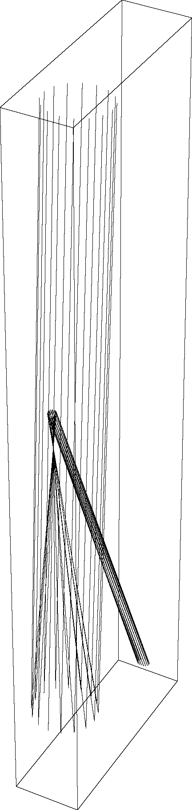
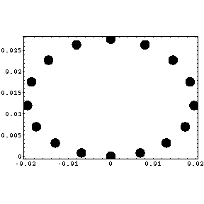
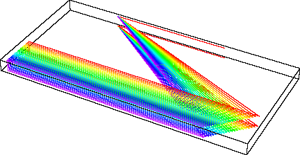
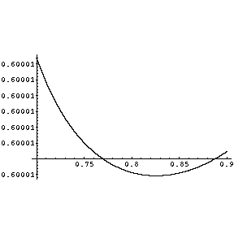
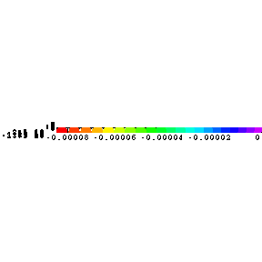
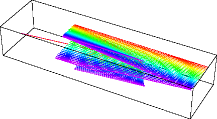
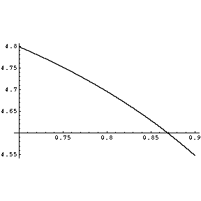
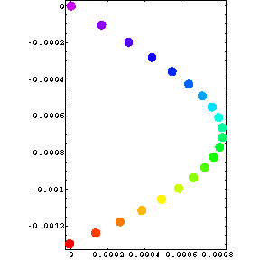
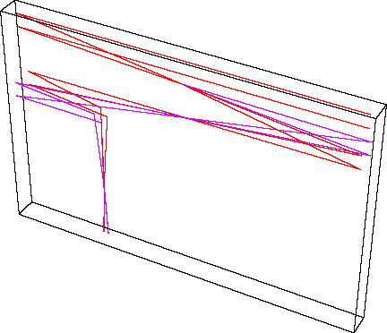

see http://www.hamline.edu/~arundquist/webMMA/research/raytracing/raytrace/
Last Modified: January 4, 2005
This page has the following elements:
The raytracing page takes an ordered list of optics along with a starting point and both calculates and plots the optical path for a variety of initial rays. The initial rays range from a single ray to a full cone or full cylinder centered on the initial direction. Each ray can represent either a single wavelength or a range of wavelengths (note that wavelengths only matter if one uses a grating or dispersive element).
If it is determined that a ray will not strike the next optic, the ray is terminated at the previous optic.
For the plane mirrors, the plane is considered infinitely large. For the curved mirrors, the mirror is comprised of the entire sphere.
For the gratings, diffraction theory is used to determine the outgoing ray direction (even out-of-plane).
At this time, the types of optics available are:
Optic |
Syntax |
Desription |
Examples |
| plane mirror | planemirror[point_on_mirror, normal_to_mirror]; | An infinite plane representing a flat mirror with one point on the plane given along with the normal (this should be normalized) | xy plane facing +z direction: planemirror[{0,0,0}, {0,0,1}]; top of periscope: planemirror[{0,0,5},norm[{1,0,-1}]]; |
| curved mirror (a) | curvedmirror[point_on_mirror, normal_at_that_point_, Radius_of_curvature, concave(True)/convex(False)]; | The inner (outer) surface of a perfect sphere if convex (concave). Again the normal should be normalized | Spherical mirror 1 m along x-axis with focal length 1 m: curvedmirror[{1,0,0}, {-1,0,0}, 2, True]; Convex mirror with center at origin: curvedmirror[{0, R, 0}, {0, -1, 0}, R, False]; |
| curved mirror (b) | curvedmirrorcenter[location_of_center, Radius of curvature, concave(True)/convex(False)]; | For use when the coordinates of the center of curvature are known (no need to specify a normal vector). Good for final optics to catch all outgoing beams. | Spherical mirror 1 m along x-axis with focal length 1 m: curvedmirrorcenter[{-1,0,0}, 2, True]; Convex mirror with center at origin: curvedmirrorcenter[{0,0,0}, R, False]; |
| symmetric lens | SymmetricLens[focal_length, height, center_coordinates, normal_of_first_surface, index_of_refraction_or_glass_type, design_wavelength_in_microns] | A positive lens that is curved on both sides. If you enter a number for index_of_refraction, it will not exhibit dispersion. Good choices for glass_type are "BK7" and "fused_silica" | 1 meter focal length, 1" lens: SymmetricLens[1, .0254, {0,0,0}, {-1,0,0}, BK7, 0.632] |
| transmission grating | transmissiongrating[point_on_grating, normal_to_grating_facing_incoming_beam, vector_parallel_to_grooves, diffraction_order, groove_spacing]; | Note that both the normal and the groove vector need to be normalized (you can always use norm[vector]). The units of the groove spacing should be in microns. | grating in x-y plane with grooves line at 45 degrees wrt x-axis, facing in +z direction with 1200 grooves/mm: transmissiongrating[{0,0,0}, {0,0,1}, norm[{1,1,0}], 1, 1000./1200]; |
| reflection grating | grating[point_on_grating, normal_to_grating, vector_parallel_to_grooves, diffraction_order, groove_spacing]; | see above | grating in y-z plane facing -x with grooves along z-axis and a groove spacing of 10 microns: grating[{0,0,0}, {-1,0,0}, {0,0,1}, 1, 10]; |
R=1.0;
cm=curvedmirrorcenter[{0,0,0}, R, True];
Below are examples from the raytracing page. You can cut and paste from this page to see for yourself at the above site.

Optics description:
R1=0.25;
R2=2.;
z1=(R2-R1)/2;
cm = curvedmirrorcenter[{0, 0, z1}, R1, True];
cm2 = curvedmirrorcenter[{0, 0, R2}, R2, True];
end=planemirror[{0,0,-.2},{0,0,1}];
Optics order:
cm2, cm, end
Initial point: 0,.1,2
Initial direction: 0,-.1,-2
Wavelengths:
low: 0.8
high: 0.8
step size: 0.01
initial ray(s):
Hollow cylinder
width of cone/cylinder: .1
number of rays around: 16
number of interior rays: 8
Analytical function: none used
Beam on last optic:


Optics description:
L=.32;
d=1000./1200;
ngrat=norm[{1.,-1.,0}];
a=.1;
offroof=0.001;
grat1=grating[{0,0,0},ngrat,{0,0,1.},-1,d];
grat2=grating[L ngrat,-ngrat,{0,0,1.},-1,d];
roof1=planemirror[{-a,0,-.01},norm[{1.,0,-1.}]];
roof2=planemirror[{-a,0,-.01},norm[{1.,0,1.+offroof}]];
endmirror=planemirror[{.2,0,0},-norm[{1.,0,offroof}]];
m=-1.;
theta1 = Pi/4;
theta2[lambda_] := ArcSin[-m lambda/d - Sin[theta1]];
l1[lambda_] := L/Cos[theta2[lambda]];
l2[lambda_] := l1[lambda] Cos[theta1 - theta2[lambda]];
ltotal[lambda_] :=2 (l1[lambda] + l2[lambda]);
Optics order:
grat1, grat2, roof1,roof2, grat2, grat1, endmirror
Initial point: .2,0,0
Initial direction: -1,0,0
Wavelengths:
low: .7
high: .9
step size: .01
initial ray(s):
Single ray
parameter 1 (width of cone/cylinder): .02
parameter 2 (number of rays around): 2
parameter 3 (number of interior rays): 8
Analytical function: ltotal[lambda] subtracted
Path Lengths:

Beam on last optic:


Optics description:
R=1.0;
d=1000./1200;
shift=0.2;
retroshift=R/4;
grat=grating[{R/2-shift,0,0},norm[{-1,-.55,0}],{0,0,1},1,d];
cm=curvedmirror[{0,0,0},{1,0,0},R,True];
fold=planemirror[{R/2,0,0},{-1,0,0}];
retro=planemirror[{R/2-shift-retroshift,0,0},norm[{1,0,0.1}]];
end=planemirror[{-shift,0,0},norm[{1,0,0.1}]];
Optics order:
grat, cm, fold, cm, grat, retro, grat, cm, fold, cm, grat, end
Initial point: -shift,0,0
Initial direction: 1,0,.1
Wavelengths:
low: 0.7
high: 0.9
step size: 0.01
initial ray(s):
Single ray
width of cone/cylinder: .1
number of rays around: 16
number of interior rays: 8
Analytical function: none used
Path Lengths:

Beam on last optic:

In phase heterodyne Stimulated Raman setup

Optics description:
d=1000./80;
s=.05;
cm1=curvedmirror[{-1,0,0},norm[{1,0,-s}],2,True];
grat1=transmissiongrating[{0,0,-2 s},norm[{-1,0,s}],norm[{s,0,-1}], 1,d];
cm2=curvedmirror[{1,0,-4 s}, norm[{-1.,0,0}], 1, True];
cm3=curvedmirror[{-1,0,-8 s}, {1,0,0}, 1, True];
pm=planemirror[{-.5, 0, -9 s}, norm[{-Tan[(Pi/2+ArcTan[2 s])/2],0,-1.}]];
grat2=transmissiongrating[{-.5,0,-9s - (1 - Sqrt[0.5^2 + s^2])},{0,0,1},{1,0,0},1,d];
end=planemirror[{-.5,0,-25 s},{0,0,1}];
Optics order:
cm1, grat1, cm2, cm3, pm, grat2, end
Initial point: 1,0,0
Initial direction: -1, 0, 0
Wavelengths:
low: -0.8
high: 0.8
step size: 1.6
initial ray(s):
Hollow cylinder
width of cone/cylinder: .04
number of rays around: 2
number of interior rays: 8
Analytical function: none used